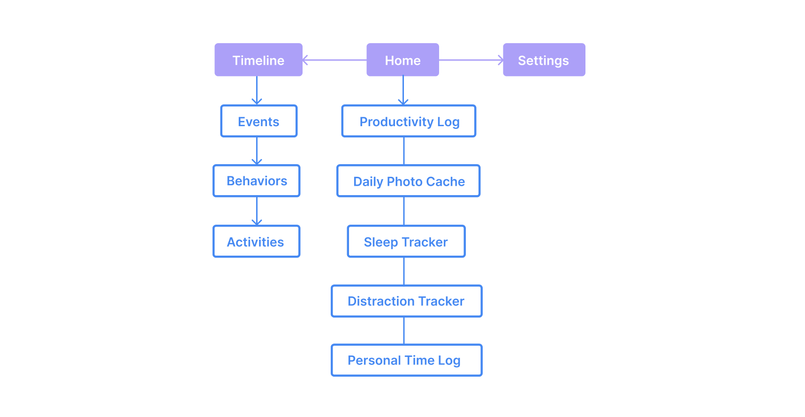
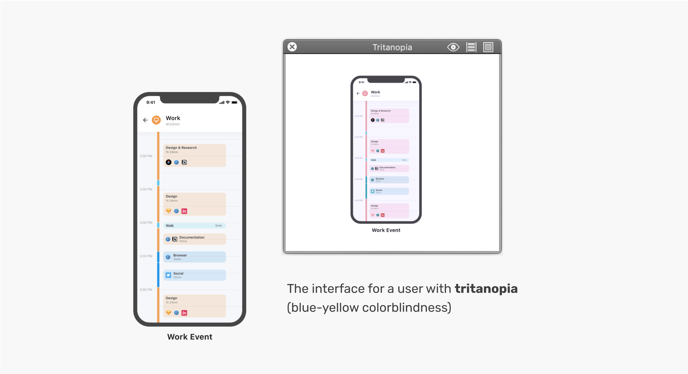

How can we grow in awareness of how we track our time when we're too busy to even remember what happens in a day?
At this moment, pursuing such a goal would require consistent logging, patience, and discipline.
Timelapse is an integrated mobile and smartwatch application that helps people keep track of how they spend their time on a daily basis.
It was inspired by late-night conversations with friends about feeling that time was slipping away, without knowing where that time was being spent.
Date
March 2020 - present
My Role
Product Designer & Researcher
Tools
Adobe Photoshop and Illustrator, Figma, Principle
The Problem
It’s easy to get through the day without fully understanding where time is being allocated. Larger events might be easier to keep track of, but smaller activities and distractions are difficult to pinpoint. In fact, manually keeping track of every detail of the day proves counter-productive and frustrating.
Is there a way to automatically keep track of how people spend their time, to enhance productivity and wellbeing?
Research
Qualitative Interviews
In order to understand the current pain points surrounding time-tracking, I conducted 30+ informal interviews with potential users between the ages of 15-60,
structuring the questions to revolve around current time usage, time tracking methods, and hurdles in the time-tracking process.
Insights
92% of users expressed that they thought they were not maximizing their time. Users often overestimate their working hours and
underestimate the time they spend on leisure activities.
Reviewing the graph revealed distractions during work.
Manual time-tracking is painful. Users would be prone to feeling
frustrated if they forgot to log their time, or even tempted to quit the exercise.
Simple visuals are more effective than pure data. Users want to see exactly what they're spending their time on but also need accessibility, so simple visuals work much better than complex, unorganized data.
Thought Experiment
To synthesize my research findings and further define problems that accompany the process of time-tracking, I created
two personas to represent potential users and a possible timeline of what their typical day might look like.
Insights
The timeline unveils user patterns. Users often overestimate their working hours and
underestimate the time they spend on leisure activities.
Reviewing the graph revealed distractions during work.
Manual time-tracking is painful. Users would be prone to feeling
frustrated if they forgot to log their time, or even tempted to quit the exercise.
Simple visuals are more effective than pure data. Users want to see exactly what they're spending their time on but also need accessibility, so simple visuals work much better than complex, unorganized data.
Looking at other existing solutions
To see what already existed in addressing the productivity problem, I researched other
time-tracking applications, what did they well, and what could be improved. I discovered that many apps
focused on time-tracking in a strictly statistical manner, which could be difficult to use to shed light on a user's daily habits.
Centralizing Time
So how could I help users understand their time usage in an automated way? After reading productivity forums and having additional informal
conversations with potential users, I came to realize that in such a technological age, our devices are a window to how we spend our time—past,
present, and future.
Protoyping
Events, Behaviors and Activities
We have so many applications on our phone already. Each app can provide automatic insight into what activities we complete and how we spend our time. I came up with the idea of
defining a time-assessment system composed of three layers: Events, Behaviors, and Activities.
These layers help the user from becoming overwhelmed by an influx of data and give them the autonomy to determine how much information they want to see at a time. Only want a high-level view?
Choose to look only at Events. Want the specifics? Dive into Behaviors or Activities.
Information Architecture
Based on the time-assessment system, I constructed the user flow to represented what a user's journey might look like. Because the application
would be generating a significant amount of data, I wanted to keep the flow as simple and streamlined as possible.

Wireframing & Low-Fidelity Mocks
To automatically present information on productivity, sleep, fitness, distractions, and memorable
moments captured during the day, I designed "highlights". Highlights are basically snapshots to help
the user view their time spent through the usage of various apps. I centered the highlights around a card model, because of its
intuitive nature. Cards are great for quickly communicating information and they allow users to easily access information that they
are interested in.
Also, cards as content containers are easy to manipulate for responsive and mobile design, and also address issues of scalability, which allows for seamless handoff to engineers for development.
Accessible Visual Design
Colors and visual design elements were chosen with color-blind users specifically in mind since color acts as an important element of organization and affordance in this app. I made sure to use software tools to simulate colorblindness and ensure enough contrast, following WCAG 2.0 standards.

Home and Settings
The home screen acts as a splash page for reviewing the day and also displays the current event.
The screen is easily scrollable for a mobile format since users would be primarily be using singular fingers or their thumb.
I included a dark mode for light-sensitive users to prevent eye strain in darker environments.
Productivity and Health
To assess productivity and health levels, this screen draws from apps like the health and exercise monitor,
the user's calendar, and Pomodoro. To enable users to set goals and track their current
status easily, I focused on implementing data charts that are universally familar.
Memorable Moments
This screen compiles the photos and videos taken in a day and chronologically displays them,
creating a visual representation of the time spent in a day. I spent
the most time on this section, trying to figure out a way to display a day's worth of memories without crowding the screen.
Timeline
Inspired loosely by Google Calendar's daily view, this screen is a direct and straightforward approach to displaying every activity. Users can
tap each section for further details of the Events, Behaviors, and Activities completed throughout the day.
Circling back to the watch
For the watch's display, I thought the most effective way to present productivity would be through
the current time and task, with the option of viewing the timeline to see the day's events at a glance.
Takeaways & Moving Forward
1. Designing across platforms. This project taught me about how to best represent
data and time across varying devices. Designing for a smartwatch was definitely a new experience
for me in terms of formatting and prototyping.
2. Time realization. Through this design exercise, I realized how much time
people spend on their electronic devices in a day and the designer's ethical obligation of encouraging users to
spend more time off their devices. Quantifying the time spent can help people
figure out how to better allocate their time.
3. Further improvements. Based on the ethical consideration of encouraging time spent offscreen, I would love to implement a goal system to help the user adjust how they currently use their time and accomplish certain goals (i.e. spend 30 mins max. on social media).